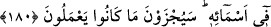

ALLAH’IN İSİMLERİ
180. En güzel isimler (el-esmâü’l-hüsnâ) Allah’ındır. O halde O’na o güzel
isimlerle dua edin. Onun isimleri hakkında eğri yola gidenleri bırakın. Onlar
yapmakta olduklarının cezasına çarptırılacaklardır.
“En güzel isimler Allah’ındır.” Allah’ın isimleri, isimlerin en güzeli ve en yücesidir.
Çünkü onlar, mânâların en güzellerine ve en yücelerine delâlet etmektedirler. Esmâ-i
hüsnâ’dan maksad, muhtelif mânâlara delâlet etmek üzere konulmuş lafızlardır. Bu da
ismin, isimlendirilenden (müsemmâ) başka olduğuna delâlet eder. Eğer isim,
isimlendirilenin aynısı olsaydı, isimlerin sayısınca isimlendirilen olması gerekirdi. Bu
ise muhaldir, imkansızdır.
İmam Gazzâlî, şöyle demiştir: Gerçek şu ki isim, isimlendirme (tesmiye) ve
isimlendirilenden başka bir şeydir. Çünkü bu üç kelime eş anlamlı değil, birbirlerinden
tamamen ayrı mânâlar ifade eden kelimelerdir.
“O halde O’na onlarla duâ edin.” Allah Teâlâ’yı bu isimlerle isimlendirin ve
onlarla O’nu anın.
Bir hadiste şöyle buyurulmuştur:
“Allah Teâlâ’nın doksan dokuz ismi vardır; onları sayan/ezberleyen cennete girer.